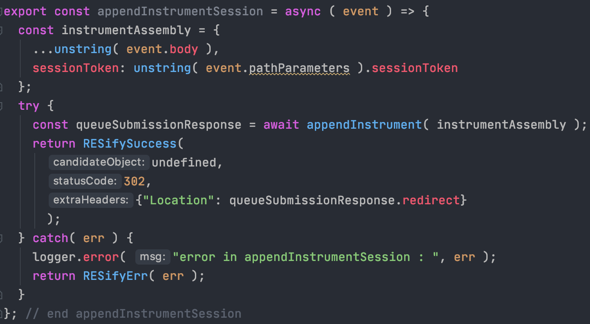

production ready MVP's
benefits of native serverless application development
chassis and architecture driven engineering
Slides: webconf2020.groklobster.io | slide source bit.ly/w3c-pres
serverless chassis: bit.ly/js-chassis | contact me: bruno@hypermedia.techabout me
- web infrastructure since late 90's
- payment processing since mid 2000's
- integration consultation since 2010
- cloud native architecture, eng and transformation since 2015
hypermedia tech
pure serverless since 2016
implemented serverless solutions for
- enterprise organisations
- businesses with PCI compliance obligations
- support tools for cloud heavy businesses
- refactor growing startups
I've cried all the tears of early adoption
serverless...why?
mastery of serverless workoads give you:
- 2+ order of magnitude cost saving
- insanely low operational overhead
- improved security profile
cost 1
extreme abstraction
needs a way to connect resources to functions
cost 2
architecture driven
requires discipline
themes
- business and operational benefits and challenges
- what is a chassis
- key architectural concerns
- technical demonstration
our example - bank generic

our example - banc generic
focus
deploy the base services (orange)
themes
- business and operational benefits and challenges
- what is a chassis
- key architectural concerns
- technical demonstration
benefits
- true pay as you go - orders of magnitude savings
- favourable shift in responsibility exposure
- low ops - development becomes operations
true pay as you go

favourable shift in shared responsibility
increased abstraction means less management
low ops
- nothing but application code to manage
- automate builds from test enabled repository
- simple declarative security per application
- environments deployed from templates with guardrails
challenges
- navigating enterprise DA's is challenging
- devOps and secOps will love you
- enterprise doesnt like javascript
- open source all the way down.
themes
- business and operational benefits and implications
- what is a chassis
- key architectural concerns
- technical demonstration
deployment chasis - what and why?
the deployment chassis answers the following questions- how do we arrange code, config and resources?
- how do we apply developer tools?
- how do we enable integration and deployment workflows?
- debug and test
Arranging code, configuration and resources
- functions
- resources
- configuration
- deployment tools
functions
example: http event handler
resources
- infrastructure as code definitions
- represent platform software components
- granular policy based access
example: table defintion
configuration
- serverless.yml - the glue
- environment configuration
- populating environment configuration
serverless.yml - the glue
environment configuration

populating environment configuration
deployment tools
- packager: serverless + webpack or parcel
- script engine: npm
- deployment pipeline: circle
all js and yaml
serverless + webpack or parcel
script engine: npm
deployment pipeline
circle ci configuration

debug and test
- cloud dogfood: use platform tools
- unit testing and tracing
- live replica per developer
cloudfood : use platform tools
- dashbird
- cloud provider monitoring tools
- advanced tracing - honecomb.io
unit testing
- standard unit testing at module level
live prod-like development
- accounts as code
- per user and per stage independent accounts
- policy guardrails, logging and monitoring appied
- compliance testing applied
themes
- business and operational benefits and implications
- what is a chassis
- key architectural concerns
- technical demonstration
architecture driven engineering
- everything is abstracted
- this is the catch
- discipline required
serverless
driven by good architecture
- good design all the way down
- event driven/stateless
- different type of coupling
- examples
design all the way down
- problem domain specification
- domain driven design
- REST(like) api's
- cloud native patterns
problem domain specification
event storming for discovery
domain driven design
bounded context per chassis
REST(like) api's
different type of coupling
use cases / examples
- static web app distribution
- decompose a faulty monolith
themes
- business and operational benefits and implications
- what is a chassis
- key architectural concerns
- technical demonstration